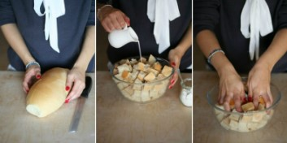
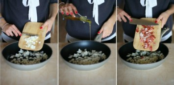
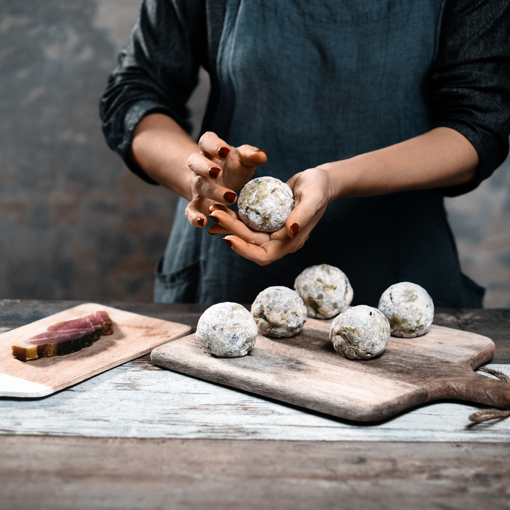
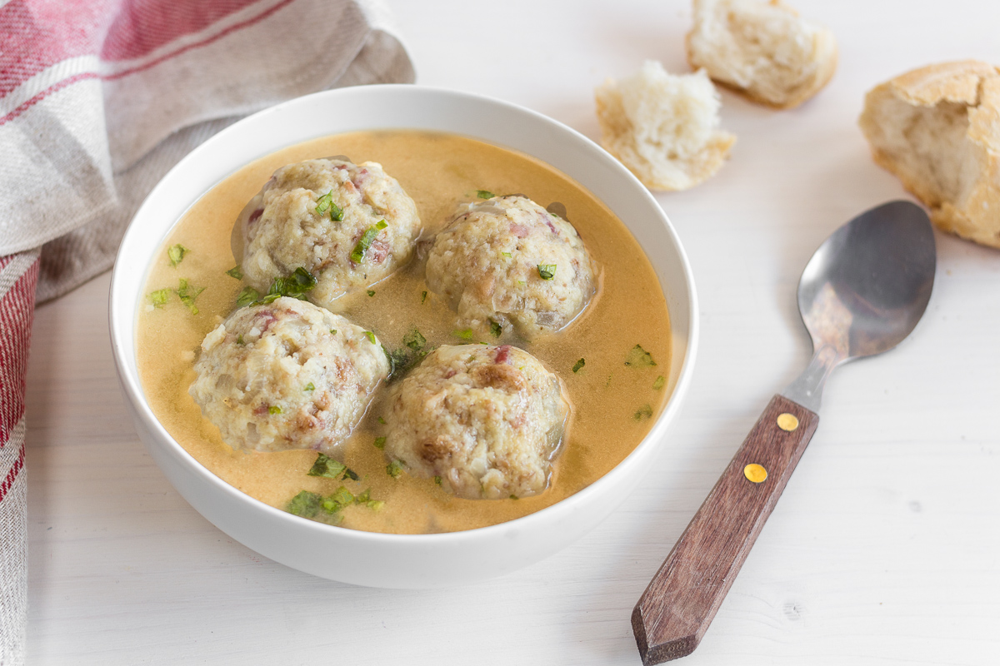

I canderli possono esser serviti come primo piatto, conditi con burro fuso e formaggio stagionato oppure con salsa di pomodoro, o ancora assieme a un buon brodo. Alcuni tipi di canederli, dalla forma più piccolina, possono esser anche utilizzati come accompagnamento a stufati di carne.
1. Con un coltello seghettato, riducete il pane raffermo a dadini grandi almeno 1 cm di lato. Riponeteli in una ciotola capiente. Sgusciate le uova e sbattetele assieme al latte. Versate il composto sul pane, mescolate e lasciate riposare.
2. Nel frattempo tritate la cipolla e tagliate a dadini lo speck. Fate fondere il burro in una padella e soffriggete dolcemente la cipolla assieme allo speck per una decina di minuti. Poi lasciate raffreddare.
3. Aggiungete la cipolla e lo speck al composto a base di pane. Insaporite con sale e pepe e profumate con il prezzemolo tritato e l’erba cipollina. Se vi piace, aggiungete anche il formaggio stagionate grattugiato. Mescolate il tutto con le mani.
4. A parte pesate i 30 grammi di farina e aggiungeteli poco per volta all’impasto. Dovrete ottenere un composto umido che però ben si stacchi dalle pareti della ciotola. Impastate bene per amalgamare tutti gli ingredienti. Lasciate riposare per almeno 30 minuti.
5. Infarinatevi le mani e prelevate delle palline d’impasto. Potete fare dei piccoli canederli dalla forma poco più grande di una noce oppure al contraro un canederlo grande quanto una pesca. Infarinateli leggermente in modo che non si attacchino alle mani.
6. Portate a ebollizione dell’acqua assieme a un pizzico di sale grosso. Alternativamente, se volete dei canederli più saporiti, potete portare a ebollizione del brodo di carne o vegetale.
7. Quando l’acqua incomincerà a sobbollire immergeteci lentamente i canederli. Cuoceteli a fuoco basso in modo che l’acqua non abbia un bollore troppo vigoroso. A seconda della loro dimensione, i canederli si cuociono in tempi che vanno dai 10 minuti (se sono piccoli) ai 20 minuti (se sono belli grandi). Controllate la cottura inserendo uno stecchino al centro: se il canederlo risulta morbido allora sono cotti.
8. Una volta pronti, potete decidere di scolare i canederli e servirli cosparsi di burro fuso e formaggio stagionato grattugiato, oppure con della salsa di pomodoro ben calda. Alternativamente, i canederli si possono gustare anche assieme a qualche mestolo di brodo bollente dove sono stati cotti.
